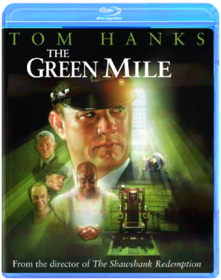
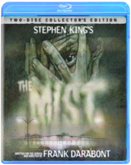
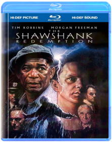

The Green Mile  Stephen King, Frank DarabontMiracles happen in unexpected places, even on death row at Cold Mountain Penitentiary. There John Coffey, a prisoner with supernatural powers, brings a sense of spirit and humanity to his guards and fellow inmates. Tom Hanks leads a stellar cast (including Michael Clarke Duncan as Coffey) in this emotional, uplifting story of guards and captives; husbands and wives; prisoners and a remarkable mouse named Mr. Jingles; and, on another level, of a moviemaker and his source. Frank Darabont returns after his 1994 directorial debut The Shawshank Redemption to adapt another Stephen King tale into a crowd-pleasing entertainment nominated for four Academy Awards, including Best Picture.Hearts in Atlantis Stephen King, Scott HicksThe Lawnmower Man Brett LeonardExperiments change a simple lawnmower man into a superhuman being. The stage is set for a dr. Jekyll and mr. Hyde struggle for the control of jobes mind the professor wanting to help mankind the other a group wanting to create an invincible war machine. Studio: New Line Home Video Release Date: 02/03/2004 Starring: Pierce Brosnon Jeff Fahey Run time: 108 minutes Rating: R Director: Brett LeonardThe Mist  Frank DarabontFrom legendary frightmaster Stephen King and 3-time Oscar-nominated director Frank Darabont* (The Shawshank Redemption, The Green Mile) comes "one of the scariest King films since Stanley Kubrick's The Shining" (Tasha Robinson, The Onion A.V. Club). After a mysterious mist envelopes a small New England town, a group of locals trapped in a supermarket must battle a siege of otherworldly creatures...and the fears that threaten to tear them apart. Starring Thomas Jane (The Punisher) and Oscar winner* Marcia Gay Harden (Mystic River) in one of the year's most talked-about performances, The Mist is riveting, with "tension like an ever-tightening clamp" (Colin Covert, Minneapolis Star Tribune).The Shawshank Redemption  Frank DarabontA prominent banker unjustly convicted of murder spends many years in the Shawshank prison. He is befriended by a convict who knows the ropes and helps him to cope with the frightning realities of prison life.The Stand After a government-spawned "superflu" wipes out more than 90 percent of the earth's population, the devastated survivors must decide whether to support or resist the advances of a mysterious stranger from way down South (heh-heh) who wishes to claim this new world order for himself. Although the six-hour length makes it nigh-impossible to digest in one sitting, this well-paced adaptation of Stephen King's apocalyptic magnum opus ranks among the best adaptations of the author's work, with strong performances from Gary Sinise, Miguel Ferrer, and especially Jamey Sheridan as a good-old-boy version of Old Scratch. The opening scene, set to the strains of Blue Oyster Cult's "Don't Fear the Reaper," is one of the most chilling things ever shot for television. Director Mick Garris is no stranger to King's world, having also helmed Sleepwalkers, the recent television remake of The Shining, and the upcoming Desperation.Stand By Me In a small woodsy Oregon town, a group of friends—sensitive Gordie (Wil Wheaton), tough guy Chris (River Phoenix), flamboyant Teddy (Corey Feldman), and scaredy-cat Vern (Jerry O'Connell)—are in search of a missing teenager's body. Wanting to be heroes in each other's and their hometown's eyes, they set out on an unforgettable two-day trek that turns into an odyssey of self-discovery. They sneak smokes, tell tall tales, cuss 'cause it's cool and band together when the going gets tough. When they encounter the town's knife-wielding hoods who are also after the body, the boys discover a strength they never knew they had. Stand By Me is a rare and special film about friendship and the indelible experiences of growing up. Filled with humor and suspense, Stand By Me is based on the novella 'The Body' by Stephen King.Storm of the Century Sonny Baskin"Give me what I want and I'll go away," demands the black-eyed, stocking-capped stranger Linoge (Colm Feore), who appears in a quiet island community on the verge of the worst storm in decades and brutally bludgeons an old lady to death. Tim Daly, the town sheriff and voice of reason and moral strength, locks up the quiet madman, but the deaths pile up as Linoge acts them out from his cell like a murderous mime pulling psychic strings. Stephen King, whose original teleplay is his best work for the screen since The Stand, transforms the sleepy burg into a Peyton Place of guilty secrets and criminal activity ripped from under a blanket of small town normality while the white-out of the snowstorm completely cuts them off from civilization. Director Craig R. Baxley nicely maintains an icy tension while the waiting game goes on, perhaps a little too long, before Linoge finally reveals "what he wants" and the drama turns into a struggle for man's soul in miniature. The more ambitious special effects and set pieces sometimes disappoint but are more than made up for in King's knack for turning the mundane into the macabre (the children's song "I'm a Little Teapot" has never sounded more sinister) and a few brilliantly realized sequences, the best of which occurs when townspeople are literally yanked out of existence while watching the storm. Storm of the Century is one of the most successful translations of King's brand of horror to the screen. —Sean Axmaker |


 Made with Delicious Library
Made with Delicious Library